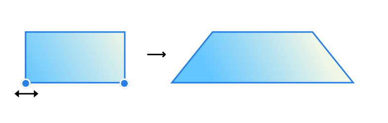

To transform multiple nodes:
To transform multiple nodes:
- With the Node Tool, select one or more nodes on a curve or shape.
- On the context toolbar, enable Transform Mode in the Transform section.
- Resize, rotate and skew either directly on the curve or shape using selection box handles or use the Transform panel for absolute precision.
To transform shapes for a simple distortion effect:
- Select two nodes on the shape.
- Enter Transform Mode.
- With the pressed, drag any selected node inwards or outwards.
This is particularly effective on simple shapes such as rectangles.
